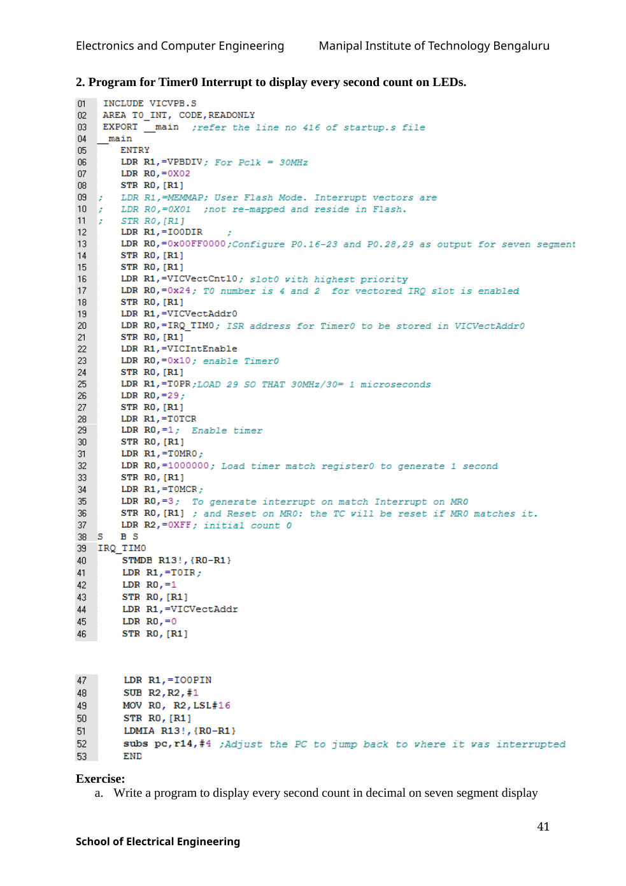

INCLUDE VICVPB.S
AREA SERIAL, CODE,READONLY
EXPORT __main ;refer the line no 416 of startup.s file
__main
ENTRY
LDR R1,=VPBDIV ; PCLK = 30MHzS
LDR R0,=2;
STR R0,[R1]
LDR R1,=PINSEL0 ; P0.0 and P0.1 configured as
LDR R0,=0X05 ; TX0 and RX0 respectively
STR R0,[R1]
LDR R1,=U0LCR ; DLAB=1 and 8 bit Caharacter length
LDR R0,=0X83; and one stop bit
STR R0,[R1]
LDR R1,=U0DLL ; for generating baud of 9600
LDR R0,=195;
STR R0,[R1]
LDR R1,=U0DLM ;
LDR R0,=0;
STR R0,[R1]
LDR R1,=U0LCR
LDR R0,=0X03;
STR R0,[R1];DLAB =0
LDR R1,=U0IER
LDR R0,=0X03; Enable THRE(bit1) and RBR(bit0) interrupt
STR R0,[R1]
LDR R1,=VICVectCntl0; slot0 with highest priority
LDR R0,=0x26; UART0(slot6) and 2 for vectored IRQ is enabled
STR R0,[R1]
LDR R1,=VICVectAddr0
LDR R0,=IRQ_UART0; ISR address to be stored in VICVectAddr0
STR R0,[R1]
LDR R1,=VICIntEnable
LDR R0,=0x40; enable UART0 interrupt
STR R0,[R1]
S B S
IRQ_UART0
STMDB R13!,{R0-R1}
LDR R1,=U0IIR; Interrupt identification reg
UP1 LDR R0,[R1]
AND R2,R0,#0X4; Check for receive data available
CMP R2,#0X4 ;interrupt
BNE UP1 ; if not equal keep monitoring for interrupt
LDR R1,=U0RBR;If interrupt, data is in U0RBR
LDRB R0,[R1]
LDR R2,=U0THR ; Same Character placed in U0THR
STRB R0,[R2]
LDR R1,=VICVectAddr
LDR R0,=0;
STR R0,[R1]
LDMIA R13!,{R0-R1}
subs pc,r14,#4 ; Adjust the PC to jump back
END
================================================================
EXP 9 : ARM 7 C PROGRAMMING - I
================================================================Original manual image(s)
